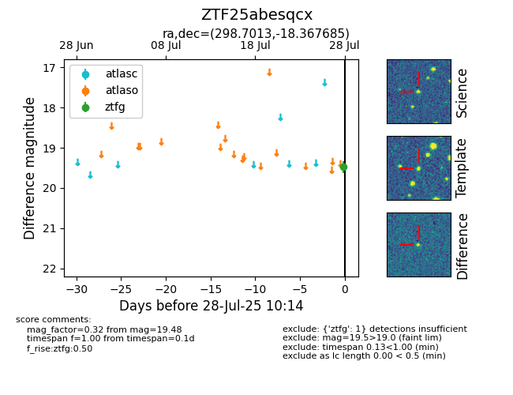

Target ZTF25abesqcx at 2025-07-28 10:14, see:
FINK: fink-portal.org/ZTF25abesqcx
Lasair: lasair-ztf.lsst.ac.uk/objects/ZTF25abesqcx
ALeRCE: alerce.online/object/ZTF25abesqcx
alt names
ZTF25abesqcx (ztf,fink)
coordinates:
equatorial (ra, dec) = (298.7013,-18.36769)
galactic (l, b) = (22.8513,-21.97866)
photometry
last ztfg=19.48
1 ztfg detections
